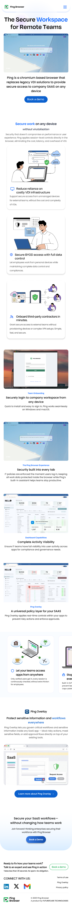
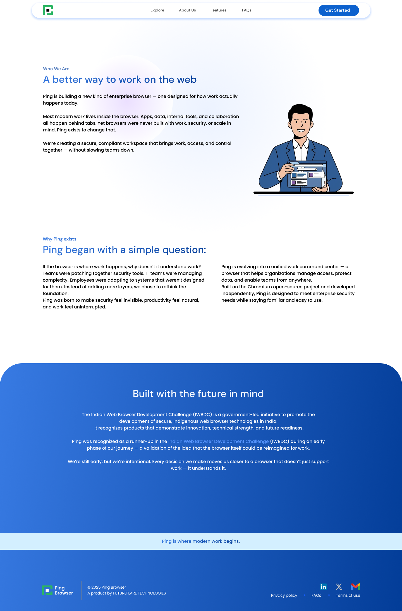
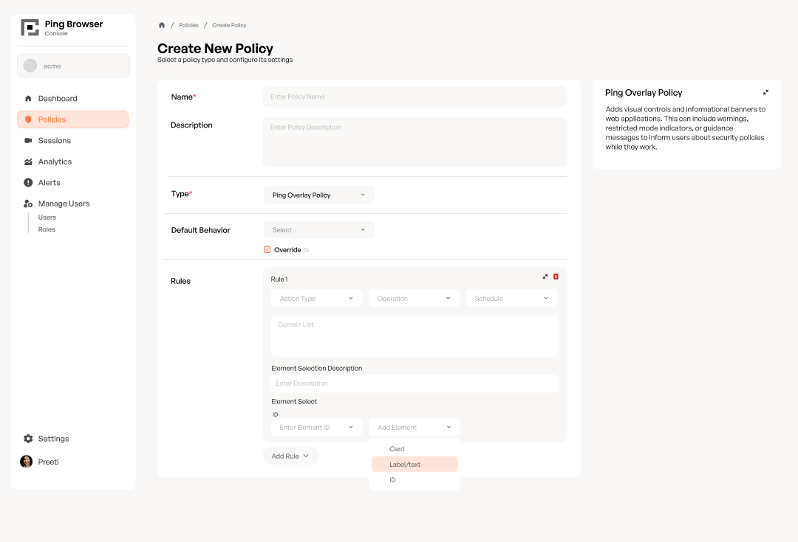
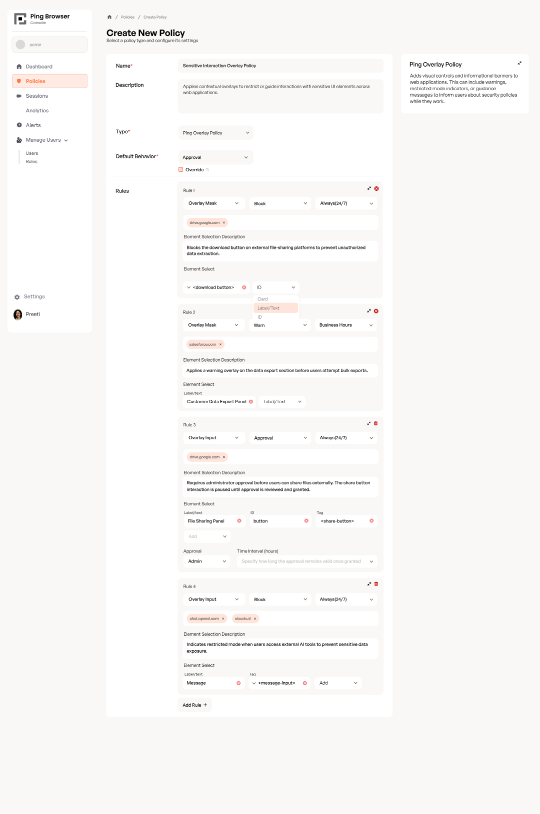

Website redesign · enterprise dashboard · design system.
Ping is a Chromium-based enterprise browser that replaces legacy VDI infrastructure and gives IT admins centralised control over how employees access company SaaS. I joined as a design intern when the core technology was solid but the design layer hadn't kept pace — no design system, a site that didn't sell the product, and a dashboard engineers were building without specs.
Key features were buried. The existing structure didn't answer visitor questions in the right order.
No tablet or mobile version, despite prospects browsing across devices before any sales call.
Limiting organic reach for a startup at a stage where every inbound visit counts.
No access to user research or session recordings. I grounded decisions in the product itself — understanding the technology before figuring out how to explain it to someone who'd never heard of it.
I audited the existing site first, then restructured the content hierarchy around a single principle: what is this → why it matters → how it works → how to get it.
All pages from scratch: homepage across three breakpoints, Ping Overlay product page, About Us, Book a Demo, and Privacy Policy. I also generated and edited the illustrations used across the site, adapting them to the visual language rather than dropping in stock assets.
After launch I set up GA4, handled production bug fixes, and used traffic data to drive ongoing SEO improvements. Traffic grew consistently over the tracking period.


The enterprise console — the tool IT admins live in daily — had no design system behind it. UI was inconsistent across screens, component specs didn't exist, and engineering was making visual decisions by default. Design and engineering weren't in sync.
Built on top of shadcn as a base, significantly extended with custom components for Ping's specific needs. The goal wasn't just visual consistency — it was giving engineers a documented set of components they could build from without having to interpret design intent themselves.
IT admins can configure a range of rules governing how employees interact with SaaS apps inside the browser. Getting that into a usable form required understanding the rules themselves — their types, states, and edge cases — before any design decisions could be made.
Multiple rounds with my manager, each surfacing something I hadn't accounted for. The back-and-forth was what made the final flow hold up.
Each policy type has its own form behaviour. I designed all of them across their full state range — empty, filled, edge cases, and policy-type resets.


Login, dashboard, users, all 7 policy types across empty + happy path + edge cases, approval modals, and the full design system component library — I'm happy to share the Figma file.
This internship taught me how much of UX is about understanding the domain before touching design tools. The policy flow only held up because I understood policies — not just their UI, but their logic and edge cases.
No user testing, no session data. I grounded decisions in the product itself: learning what Ping does technically before designing how to explain it. Constraints made the thinking sharper.
The system wasn't for design reviews — it was for the engineers building from it. Clear states, documented variants, no ambiguity. That's what made the adoption stick.
Alongside the main work, I ran roughly 20 iterations on the Ping browser's home screen — exploring directions for what a premium enterprise new-tab page could feel like. This was exploratory only, not shipped.